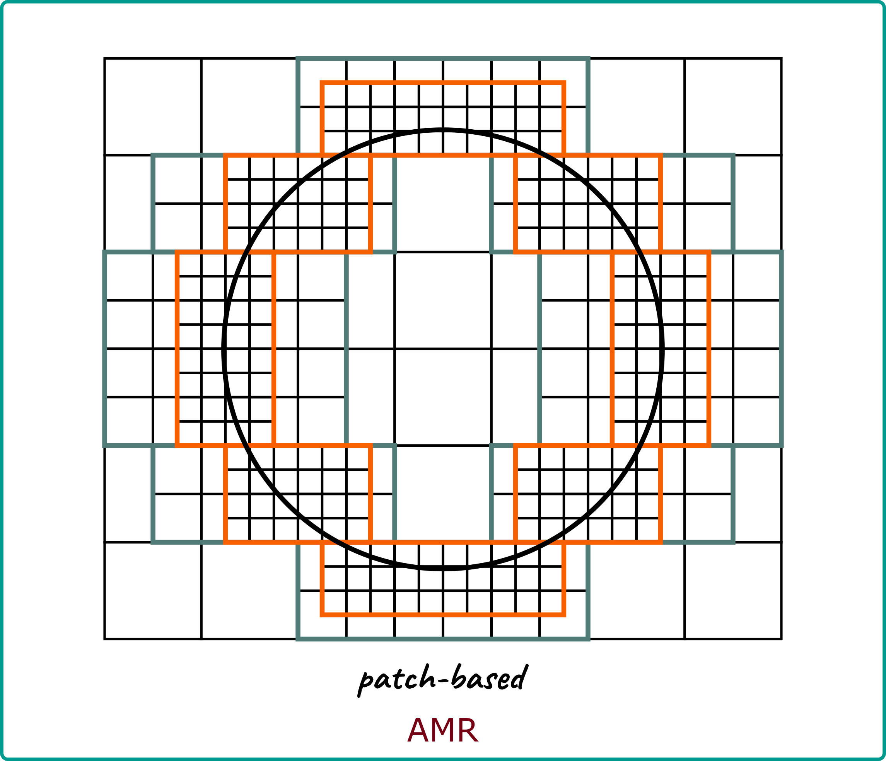
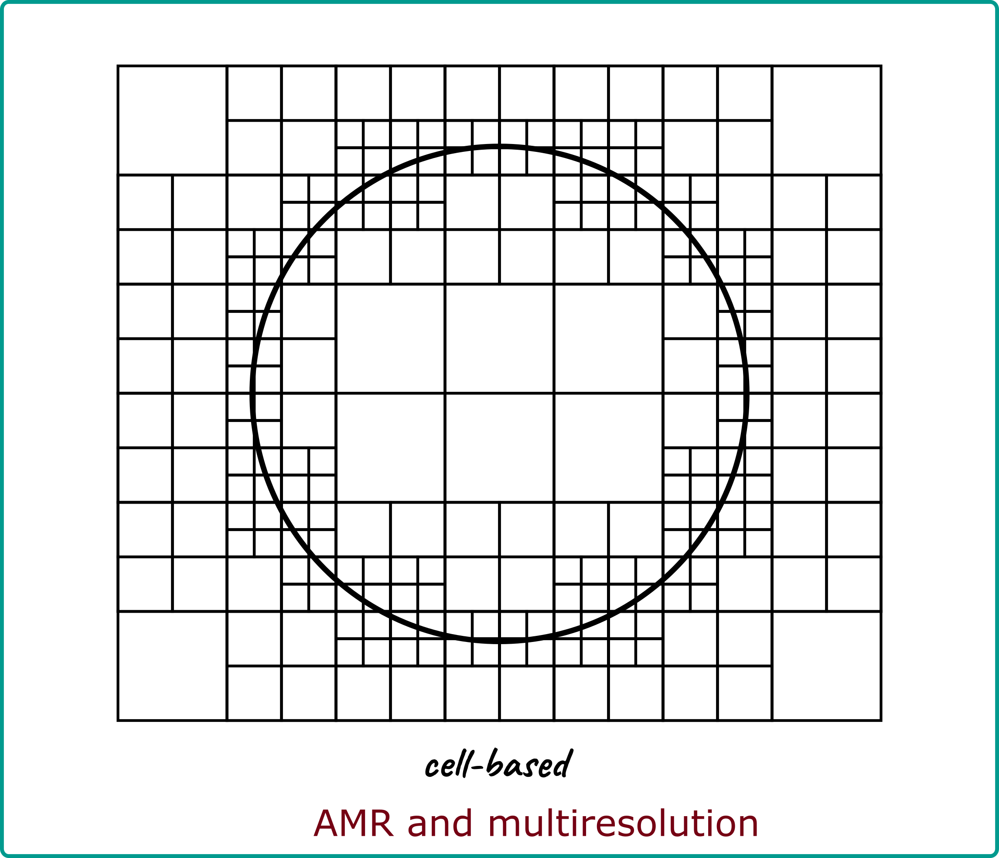

CANUM 2022
Loïc Gouarin
Most of the open source software dedicated to adaptive mesh refinement focus on the mesh and not on the numerical schemes defined on a cartesian grid.
As a result, the API can be difficult to use and code on uniform meshes must be rewritten.
The search of an admissible set is again recursive. The algorithm starts from the last dimension (y in 2d, z in 3d, …).
The available operators in samurai are for now
auto u = samurai::make_field<double, 1>("u", mesh);
...
auto set = samurai::intersection(mesh[level], mesh[level + 1])
.on(level);
set([&](const auto& i, auto)
{
u(level, i) = 0.5*(u(level + 1, 2*i) + u(level + 1, 2*i + 1));
});